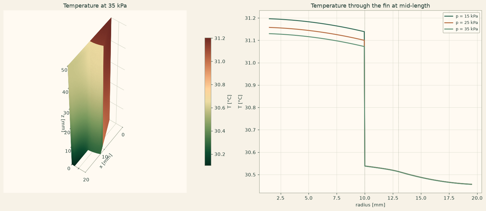
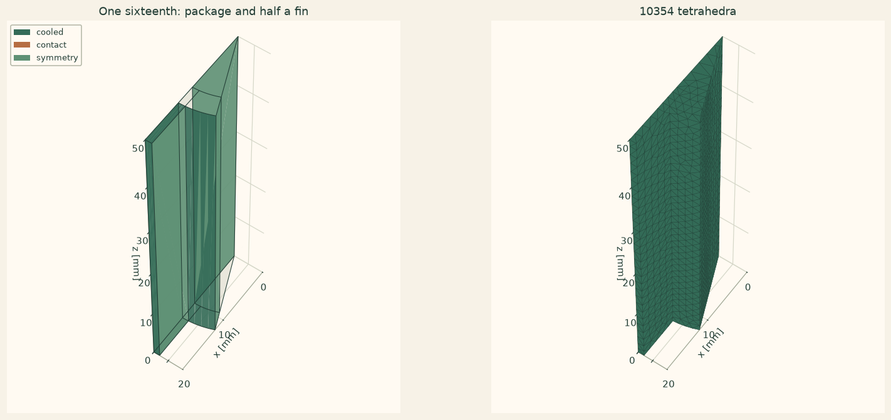

Docs › Examples › Thermal contact between an electronic package and a finned heat sink
Heat transfer · 3D
Thermal contact between an electronic package and a finned heat sink
A cylindrical silicon package dissipating 5 W sits in the bore of an aluminium heat sink with eight fins cooled by an air stream; the rough interface conducts through solid spots and the gas in the gap.

What it computes
OneSimulation reads one sixteenth of the device as a STEP assembly of package and sink and solves 3D steady heat conduction with quadratic tetrahedra. The thermal contact conductance combines the Cooper-Mikic-Yovanovich solid-spot law with a Vickers microhardness and the gas-gap conductance with rarefaction; the air side carries the local laminar flat-plate coefficient along the fins, solved with Newton's method. The script that builds the STEP file comes with the notebook.
What it checks
The contact conductance is 2582 and 2893 W/(m² K) at 15 and 35 kPa; the computed jump across the interface, 0.620 and 0.554 K, matches the mean contact flux over the conductance (0.616 and 0.550 K) within 0.7 %. The heat source leaves through the cooled faces (4.996 W of 5 W, the rest is the faceting of the package), and the fin tip at mid-length (30.45 °C) lies 0.3 K above the resistance estimate of the sink surface.
Geometry
The notebook starts at the import of the CAD file package_heat_sink_thermal_contact.step: STEP (AP242), readable by any CAD program, with the names of the faces that the boundary conditions use. Put it next to the notebook.

The geometry script
The script package_heat_sink_thermal_contact_geometry.py builds the geometry with the CAD objects of OneSimulation and writes the file. Change a dimension there, run it, and run the notebook again.
"""Geometry of the OneSimulation example "Thermal contact between an electronic package and a finned heat sink".
Builds one sixteenth of the device with the CAD objects of OneSimulation: a sector of 22.5 degrees,
5 cm long, cut from a cylindrical silicon package of 1 cm radius and from the aluminium heat sink
around it, a hub of 3 mm wall with eight radial fins of 2 mm thickness that reach 2 cm from the axis
(the sector holds half of one fin). Both parts go to package_heat_sink_thermal_contact.step as an
assembly of package and sink. Groups: symmetry (the two cut planes), ends (z = 0 and z = 5 cm),
contact (the package surface and the bore of the sink) and cooled (the air-side faces of the sink).
"""
import math
from onesim.cad.d2 import Profile
from onesim.cad.d3 import AnnularCylinder, Assembly, Box, Cylinder, Prism
radius, hub, tip, fin, length, angle = (
0.01,
0.013,
0.02,
0.002,
0.05,
math.radians(22.5),
)
wedge = Prism(
profile=Profile.polygon([(0.0, 0.0), (0.05, 0.0), (0.05, 0.05 * math.tan(angle))]),
height=length,
)
package = Cylinder(radius=radius, length=length) & wedge
sink = (
(
AnnularCylinder(inner_radius=radius, outer_radius=hub, length=length)
| (
Box(length=tip, width=fin / 2, height=length)
& Cylinder(radius=tip, length=length)
)
)
- Cylinder(radius=radius, length=length)
) & wedge
def groups(part):
ends = part.select(
faces=lambda face: face.kind == "plane"
and (abs(face.center[2]) < 1e-6 or abs(face.center[2] - length) < 1e-6)
)
symmetry = part.select(
faces=lambda face: face.kind == "plane"
and abs(face.center[2] - length / 2) < 1e-6
and (
abs(face.center[1]) < 1e-6
or abs(math.atan2(face.center[1], face.center[0]) - angle) < 1e-4
)
)
contact = part.select(
faces=lambda face: face.kind == "cylinder"
and math.hypot(face.center[0], face.center[1]) < 1.02 * radius
)
return dict(ends=ends, symmetry=symmetry, contact=contact)
named = groups(package)
package = package.grouped(
ends=named["ends"],
contact=named["contact"],
symmetry=package.boundaries.all - named["ends"] - named["contact"],
)
named = groups(sink)
sink = sink.grouped(
**named,
cooled=sink.boundaries.all - named["ends"] - named["symmetry"] - named["contact"]
)
Assembly(parts=(package.named("package"), sink.named("sink"))).save(
"package_heat_sink_thermal_contact.step"
)The notebook
The complete notebook, cell by cell. Run it to produce the figures and the comparison printout.
Two machined surfaces pressed together touch only at the tips of their roughness. Heat crosses the interface through these spots and through the gas in the gaps between them, and the temperature jumps across the interface. The contact conductance \(h\) sets the jump,
Solid spots (Cooper, Mikic and Yovanovich 1969, for plastically deformed asperities): \(h_c=1.25\,k_s\,\dfrac{m}{\sigma}\left(\dfrac{p}{H_c}\right)^{0.95}\) with the harmonic mean conductivity \(k_s=2k_1k_2/(k_1+k_2)\), the combined surface roughness \(\sigma=2\) µm, the mean asperity slope \(m=0.12\) and the contact pressure \(p\). The microhardness of the aluminium follows the Vickers correlation \(H_c=c_1\,(1.62\,\sigma/(\sigma_0 m))^{c_2}\) with \(c_1=6.23\) GPa, \(c_2=-0.23\), \(\sigma_0=1\) µm.
Gas gap (Yovanovich, in Bejan and Kraus, Heat Transfer Handbook, 2003, ch. 4): \(h_g=k_g/(Y+M)\) with the mean plane separation \(Y=1.53\,\sigma\,(p/H_c)^{-0.097}\) and the gas rarefaction parameter \(M=\frac{2-\alpha}{\alpha}\,\frac{2\gamma}{\gamma+1}\,\frac{\Lambda}{\Pr}\) for air at 50 Torr (\(k_g=0.031\) W/(m K), accommodation \(\alpha=0.78\), mean free path \(\Lambda\)).
The package is a silicon cylinder (\(k=130\) W/(m K)) of 1 cm radius and 5 cm length with a uniform heat source of 5 W. The aluminium sink (\(k=238\) W/(m K)) has a hub of 3 mm wall and eight radial fins of 2 mm that reach 2 cm from the axis. Air at 20 °C flows along the fins at \(U=8.5\) m/s; the local laminar flat-plate coefficient at the distance \(z\) from the leading edge is
| faces | condition | |---|---| | cooled, air side of the sink | \(-k\,\partial T/\partial n=h_\text{air}(z)\,(T-20\ \text{°C})\) | | contact, package surface and bore | thermal contact, conductance \(h_c+h_g\) | | symmetry, the two cut planes | no heat flux | | ends, \(z=0\) and \(z=5\) cm | no heat flux |
By symmetry one sixteenth of the device, a sector of 22.5° with half a fin, is modelled. It comes from the CAD file package_heat_sink_thermal_contact.step, an assembly of the parts package and sink; the script package_heat_sink_thermal_contact_geometry.py builds it with the CAD objects of OneSimulation.
Reference. The heat that leaves through the cooled faces must equal the 5 W of the package. The mean temperature jump at the contact must equal the mean contact heat flux divided by \(h\). The short aluminium fins are nearly isothermal (fin efficiency above 99 %), so the mean sink temperature follows from \(T_\text{air}+P/\int h_\text{air}\,\mathrm{d}A\).
import numpy as np
from onesim.cad.exchange import load
from onesim.materials import IsotropicSolid, regionwise
from onesim.materials.thermal import asperity_contact_conductance
from onesim.meshing import TetrahedralMesher, interface
from onesim.numerics import Numerics
from onesim.numerics.fem import FiniteElement, Lagrange
from onesim.numerics.linear import SparseDirect
from onesim.physics.heat_transfer import (
ConvectiveHeatFlux,
HeatConduction,
HeatFlux,
ThermalContact,
)
from onesim.simulation import Problem, Simulation
from onesim.visualization import plots, theme
theme.set()Geometry and mesh
load returns the sector with the parts package and sink as material regions and their named faces. Tetrahedra of 1.2 mm, 0.6 mm at the contact, fill it.
device = load("package_heat_sink_thermal_contact.step")
faces = device.boundaries
mesh = TetrahedralMesher(
target_size=0.0012,
size_field=lambda p: np.where(
np.abs(np.hypot(p[:, 0], p[:, 1]) - 0.01) < 0.002, 0.0006, 0.0012
),
).generate(device)
contact = interface(mesh, "package_sink")
fig = plots.figure(1, 2, size=(14, 6))
plots.geometry(
device,
selection={
"cooled": faces["sink.cooled"],
"contact": faces["package.contact"],
"symmetry": faces["sink.symmetry"] | faces["package.symmetry"],
},
labels=False,
camera=plots.Camera(elevation=55, azimuth=35),
length_unit="mm",
title="One sixteenth: package and half a fin",
ax=fig[0],
)
plots.mesh(
mesh,
groups=("all",),
legend=False,
camera=plots.Camera(elevation=55, azimuth=35),
length_unit="mm",
title=f"{mesh.cell_count} tetrahedra",
ax=fig[1],
)
plots.show()Contact conductance
asperity_contact_conductance gives the solid-spot part; the gas gap and the microhardness are the short formulas above. Three contact pressures, 15, 25 and 35 kPa, are compared.
k_si, k_al, power, length, radius = 130.0, 238.0, 5.0, 0.05, 0.01
sigma, slope, k_gap = 2e-6, 0.12, 0.031
hardness = 6.23e9 * (1.62 * sigma / (1e-6 * slope)) ** -0.23
free_path = 0.064e-6 * (300.0 / 288.0) * (760.0 / 50.0)
rarefaction = (2 - 0.78) / 0.78 * (2 * 1.4 / 2.4) * free_path / 0.707
pressures = (15e3, 25e3, 35e3)
conductance = {
p: asperity_contact_conductance(
pressure=p,
conductivity=2 * k_si * k_al / (k_si + k_al),
rms_roughness=sigma,
asperity_slope=slope,
microhardness=hardness,
)
+ k_gap / (1.53 * sigma * (p / hardness) ** -0.097 + rarefaction)
for p in pressures
}
print(
f"microhardness {hardness / 1e9:.2f} GPa, gas rarefaction parameter {1e6 * rarefaction:.2f} µm"
)
for p, h in conductance.items():
print(f"p = {p / 1e3:4.0f} kPa: contact conductance {h:7.0f} W/(m² K)")Model
regionwise gives each part its conductivity and the package its heat source; ThermalContact acts on the faces between the two parts, which interface returns. The local air-side coefficient varies along the fins: ConvectiveHeatFlux takes it as a function of the position.
air, speed, nu_air, k_air, prandtl = 293.15, 8.5, 1.59e-5, 0.0263, 0.707
h_air = (
lambda x, y, z: 0.332
* k_air
* prandtl ** (1 / 3)
* np.sqrt(speed / (nu_air * np.maximum(z, 1e-3)))
)
source = power / (np.pi * radius**2 * length)
material = IsotropicSolid(
density=2500.0,
specific_heat_capacity=800.0,
youngs_modulus=1e11,
poisson_ratio=0.3,
thermal_expansion_coefficient=0.0,
thermal_conductivity=regionwise({"package": k_si, "sink": k_al}, unit="W/m/K"),
)
numerics = Numerics(
spatial=FiniteElement(element=Lagrange(order=2)), linear_solver=SparseDirect()
)
models, temperatures = {}, {}
for p, h in conductance.items():
model = HeatConduction(
domain=device.domain(),
material=material,
heating=regionwise({"package": source}, default=0.0, unit="W/m^3"),
)
problem = Problem(
name=f"Package on a heat sink, {p / 1e3:.0f} kPa",
geometry=device,
physics=(model,),
boundary_conditions=(
ConvectiveHeatFlux(
boundary=faces["sink.cooled"],
physics=model,
heat_transfer_coefficient=h_air,
ambient_temperature=air,
),
HeatFlux(
boundary=faces.all - faces["sink.cooled"], physics=model, value=0.0
),
ThermalContact(boundary=contact, physics=model, conductance=h),
),
)
models[p] = model
temperatures[p] = (
Simulation(problem=problem, mesh=mesh, numerics=numerics)
.solve_stationary()
.field(model.temperature)
)Results
The heat leaving the sector through the cooled faces (times 16), the mean jump across the contact between points 0.3 mm on either side along the sector bisector, and the temperature of the fin tip at mid-length against the resistance estimate of the sink surface.
angle = np.radians(11.25)
z = np.linspace(0.002, 0.048, 24)
inner = np.column_stack(
(
(radius - 3e-4) * np.cos(angle) * np.ones_like(z),
(radius - 3e-4) * np.sin(angle) * np.ones_like(z),
z,
)
)
outer = np.column_stack(
(
(radius + 3e-4) * np.cos(angle) * np.ones_like(z),
(radius + 3e-4) * np.sin(angle) * np.ones_like(z),
z,
)
)
area = 2 * np.pi * radius * length
nodes = np.linspace(0, 1, 401)
weight = (
np.sqrt(speed / nu_air) * 0.332 * k_air * prandtl ** (1 / 3) * 2 * np.sqrt(length)
)
cooled_area_per_length = 2 * np.pi * 0.013 - 8 * 0.002 + 8 * 2 * 0.007 + 8 * 0.002
estimate = air + power / (weight * cooled_area_per_length)
print(
f"resistance estimate of the mean sink surface temperature: {estimate - 273.15:.2f} °C"
)
print(
"p [kPa] heat out [W] jump [K] q/h [K] package centre [°C] sink at the fin tip [°C]"
)
for p, field in temperatures.items():
out = 16 * field.boundary_flux(faces["sink.cooled"])
jump = np.mean(field.evaluate(inner) - field.evaluate(outer))
centre = field.evaluate(np.array([[1e-4, 1e-5, length / 2]]))[0]
tip = field.evaluate(np.array([[0.0199, 1e-5, length / 2]]))[0]
print(
f"{p / 1e3:7.0f} {out:14.4f} {jump:10.4f} {power / area / conductance[p]:9.4f} {centre - 273.15:21.3f} {tip - 273.15:23.3f}"
)The heat source leaves through the cooled faces (the faceted package of the mesh holds a little less volume than the cylinder, and with it a little less of the 5 W), and the jump at the contact is the mean contact flux over the conductance. With these surfaces the gas in the gap carries most of the heat, so the contact pressure changes the jump only a little; the fin tip lies within a few tenths of a kelvin of the resistance estimate.
Figure
The temperature on the surface of the sector at 35 kPa, and the temperature along the radius through the fin at mid-length for the three pressures.
fig = plots.figure(1, 2, size=(15, 6))
plots.surface(
temperatures[35e3],
component=lambda T, position: T - 273.15,
camera=plots.Camera(elevation=55, azimuth=35),
subdivisions=2,
length_unit="mm",
label="T [°C]",
title="Temperature at 35 kPa",
ax=fig[0],
)
r = np.linspace(0.0015, 0.0195, 361)
line = np.column_stack((r, np.full_like(r, 0.0005), np.full_like(r, length / 2)))
plots.line(
x=1e3 * r,
y={
f"p = {p / 1e3:.0f} kPa": temperatures[p].evaluate(line) - 273.15
for p in pressures
},
vlines=[10.0, 13.0],
xlabel="radius [mm]",
ylabel="T [°C]",
title="Temperature through the fin at mid-length",
ax=fig[1],
)
plots.show()Going further
Lower the gas pressure towards vacuum, where only the solid spots conduct and the jump grows by an order of magnitude, or make the fins longer in package_heat_sink_thermal_contact_geometry.py to see the contact take a larger share of the total resistance.